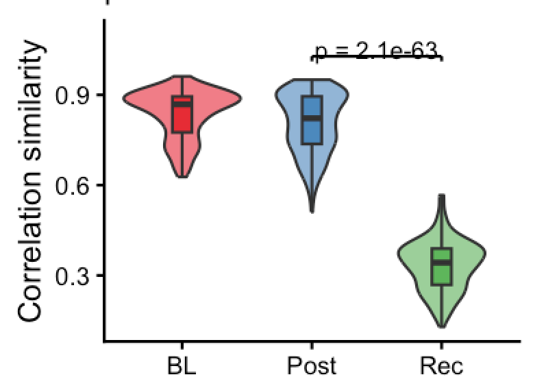
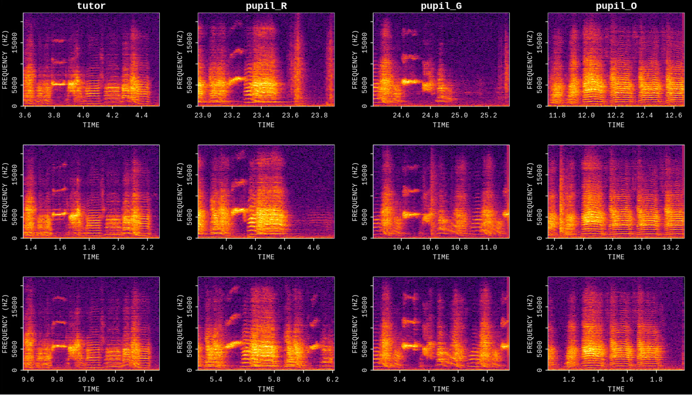
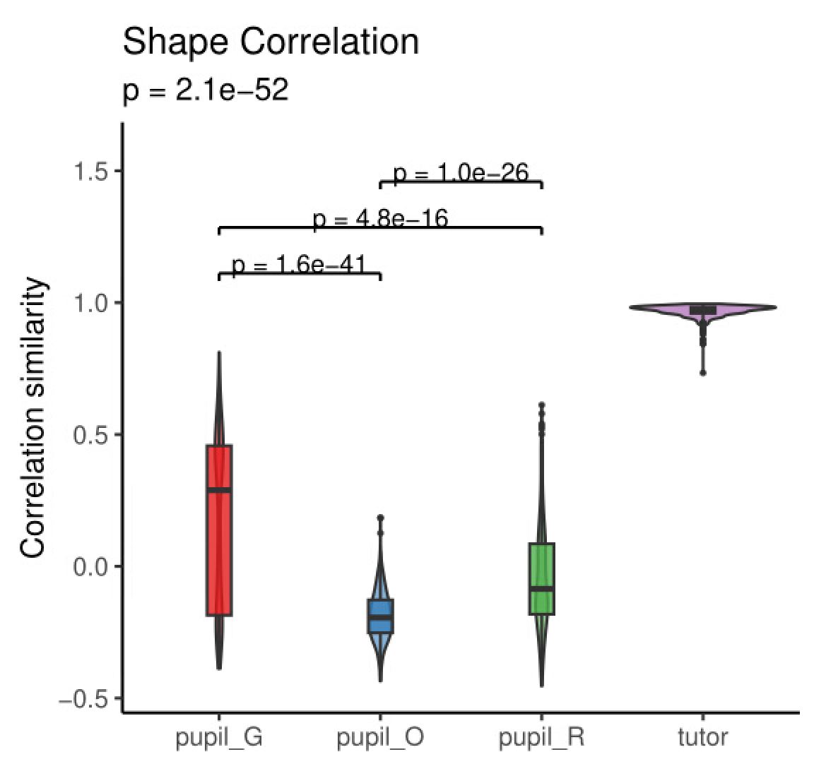

Longitudinal Motif Similarity Analysis
Source:vignettes/longitudinal_motif_similarity.Rmd
longitudinal_motif_similarity.RmdIntroduction
This vignette demonstrates how to quantify how similar each motif rendition is to a designated reference stage using the trajectory embeddings produced in the previous vignette. Similarity scores derived from multiple complementary distance metrics (RMS, Fréchet, DTW, and correlation) provide a per-rendition and per-label measure of acoustic convergence to the reference trajectory.
Prerequisites: Before reading this vignette, we recommend completing:
- Longitudinal Motif Trajectory Analysis — Building trajectory matrices and UMAP embeddings
What you will learn:
- How to remove outlier renditions before analysis using
filter_trajectory_outliers() - How to compute trajectory similarity scores relative to a reference
label with
trajectory_similarity() - How to visualise and interpret per-label similarity distributions
with
plot_trajectory_similarity()
Overview
A trajectory similarity score answers the question: how closely does an individual motif rendition follow the average path of the reference label in PC space? Four complementary metrics capture different aspects of path resemblance, but they do not share the same scale:
| Metric | What it captures | Score range |
|---|---|---|
| RMS | Persistent pointwise deviation across the full trajectory | (0, 1] |
| Fréchet | Overall curve shape; robust to variable-length paths | (0, 1] |
| DTW | Shape similarity under timing shifts | (0, 1] |
| Correlation | Mean Pearson r across PC dimensions over time (scale-free) | [-1, 1] |
Distance-based metrics (RMS, Fréchet, DTW) are converted from raw distances into bounded similarity scores via an exponential decay: . A score of 1 means the rendition is within normal reference variation; scores approach 0 as deviation grows.
Correlation is the mean Pearson r across PC dimensions, preserved in its native range. +1 = identical temporal dynamics to the reference path; 0 = no co-variation; –1 = inverted trajectory.
In this vignette we use BL (baseline) as the reference, so all metrics reflect how closely Post and Rec motifs match the pre-perturbation trajectory.
Beyond longitudinal developmental series, the same workflow applies
whenever you want to compare a group of renditions to a known reference.
A natural example is tutor-pupil similarity: pool tutor
and pupil recordings into a single SAP object (see Constructing a SAP Object for
pool_sap_recordings()), run the full trajectory pipeline
treating the tutor as the reference label, and the resulting similarity
scores directly quantify how closely each pupil motif copies the tutor’s
acoustic trajectory.
Load a previously saved SAP object
This vignette continues from Longitudinal Motif Trajectory Analysis. Load the SAP object saved at the end of that tutorial.
sap <- readRDS("longitudinal_motif_trajectory.rds")Verify that trajectory embeddings are present:
Motif renditions: 570Complete Pipeline (copy-paste reference)
library(ASAP)
sap <- readRDS("longitudinal_motif_trajectory.rds")
sap <- sap |>
filter_trajectory_outliers() |>
trajectory_similarity(metrics = "all")
plot_trajectory_similarity(sap, similarity_baseline = "reference")
saveRDS(sap, "longitudinal_motif_similarity.rds")Quality Control: filter outlier renditions
Before computing similarity scores, remove trajectory renditions that are statistical outliers relative to their label group. This prevents a small number of badly detected or corrupted motifs from distorting the reference path and the resulting similarity scores.
filter_trajectory_outliers() works per label and per PC
dimension: at each time step it computes IQR bounds across renditions,
flags any rendition whose values fall outside those bounds for more than
min_outlier_fraction of its time steps, and removes those
renditions entirely.
sap <- filter_trajectory_outliers(sap)=== Trajectory Outlier Filtering ===
IQR multiplier : 4.0 | Min outlier fraction: 10%
Dimensions : PC1, PC2
label n_before n_removed n_after pct_removed
BL 190 1 189 0.5
Post 190 2 188 1.1
Rec 190 0 190 0.0
Total renditions: 570 -> 567 (removed 3, 0.5%)Key parameters
| Parameter | Role | Typical range |
|---|---|---|
dims |
PC dimensions used to assess outlier status | c("PC1", "PC2") |
iqr_multiplier |
Width of outlier bounds (larger = more lenient) | 3 - 6 |
min_outlier_fraction |
Fraction of flagged time steps required to remove a rendition | 0.05 - 0.2 |
Tuning tips
-
Too many renditions removed -> raise
iqr_multiplier(e.g.6) or increasemin_outlier_fraction(e.g.0.2). -
Outliers still visible in UMAP -> lower
iqr_multiplier(e.g.3) or decreasemin_outlier_fraction(e.g.0.05). -
Restrict filtering to specific labels -> use the
labelsargument, e.g.labels = "Post".
Compute trajectory similarity
trajectory_similarity() builds a robust reference path
from the reference_label renditions and then computes all
four distance metrics between every other rendition and that reference
path. With metrics = "all", RMS, Fréchet, DTW, and
correlation are computed together.
In this vignette we use BL as the reference, so similarity scores reflect how closely Post and Rec motifs match the baseline acoustic trajectory.
sap <- trajectory_similarity(
sap,
reference_label = "BL",
metrics = "all"
)=== Trajectory Similarity Analysis ===
Dimensions : PC1, PC2
Reference label : BL
Trim fraction : 10% each tail
Min coverage : 50% of reference renditions per time step
Time binning : 6 decimal places
Similarity base : reference
Similarity scale : 1
Metrics : rms, frechet, dtw, correlation
Interpolation : matched time points
Labels : BL, Post, Rec
Reference trajectory: 221 time steps (221 raw binned time steps)
Reference scales :
RMS : 374.6786
Fréchet : 1027.8868
DTW : 177.9610
--- Summary (Reference label excluded from tests) ---
label n rms_similarity_mean rms_similarity_sd frechet_similarity_mean frechet_similarity_sd dtw_similarity_mean
1 BL 189 0.8141877 0.2791135 0.8117797 0.2810829 0.8500838
2 Post 188 0.7081634 0.3370990 0.7080934 0.3400851 0.7872454
3 Rec 190 0.3485460 0.1965005 0.5574273 0.3549270 0.3878876
dtw_similarity_sd correlation_mean correlation_sd
1 0.2197632 0.8367128 0.08009094
2 0.2565873 0.8069680 0.09936897
3 0.2124347 0.3334757 0.08329064
Kruskal-Wallis tests:
rms: chi-sq = 99.95, p = 1.56e-23
frechet: chi-sq = 32.17, p = 1.42e-08
dtw: chi-sq = 151.40, p = 8.59e-35
correlation: chi-sq = 282.59, p = 2.05e-63Key parameters
| Parameter | Role | Typical range / notes |
|---|---|---|
reference_label |
Label used to build the reference path; omit to use the last sorted label | "BL" |
metrics |
Which distance metrics to compute |
"all" or c("rms", "correlation")
|
dims |
PC dimensions included in the distance calculation | c("PC1", "PC2") |
trim_fraction |
Fraction of extreme reference renditions trimmed when building the reference path | 0.05 - 0.2 |
min_coverage |
Minimum fraction of reference renditions that must cover a time bin | 0.3 - 0.7 |
similarity_baseline |
Transform for normalized distances: "reference" treats
within-reference variation as converged, "zero" uses raw
normalized distance |
"reference" (default) |
stats |
Whether to run Kruskal-Wallis and pairwise Wilcoxon tests |
TRUE / FALSE
|
Where are the results stored?
# Per-rendition similarity scores
head(sap$features$motif$trajectory_similarity$similarity)
# Per-label summary statistics
sap$features$motif$trajectory_similarity$summary
# Statistical tests
sap$features$motif$trajectory_similarity$testsVisualise similarity
plot_trajectory_similarity() generates one panel per
metric, showing per-label distributions of similarity scores with
significance annotations.
plot_trajectory_similarity(sap, similarity_baseline = "reference")
Per-label trajectory similarity distributions for each metric (RMS, Fréchet, DTW, Correlation). Similarity of 1 indicates a rendition that matches the BL reference path within the reference-label variability. Significance brackets show pairwise Wilcoxon results.
Interpreting the plot
- High similarity for Post (mean correlation ~ 0.81, RMS similarity ~ 0.71) -> motifs in the Post stage remain acoustically very close to the baseline (BL) trajectory path.
- Marked drop for Rec (mean correlation ~ 0.33, RMS similarity ~ 0.35) -> motifs in the recovery stage deviate significantly from baseline, indicating substantial developmental divergence rather than a simple reversion.
- Highly significant differences ( across all metrics) -> Kruskal-Wallis tests confirm robust statistical differentiation between experimental stages.
- Narrow vs. wide distributions -> width of violin/box reflects within-stage acoustic variability across individual motif renditions.
Tuning tips
-
All labels show very high similarity -> try
similarity_baseline = "zero"to spread out the scale, or lowersimilarity_scale_multiplier. -
Reference label (BL) shows low self-similarity
-> consider increasing
trim_fractionor tighteningiqr_multiplierin the outlier filtering step. -
Only interested in two metrics -> pass
metrics = c("rms", "correlation")totrajectory_similarity()for a faster, cleaner plot.
Application: tutor-pupil similarity
Trajectory similarity is equally well suited to scoring how closely a pupil bird copies its tutor. The workflow is identical to the developmental example above:
- Pool tutor and pupil recordings into one SAP object with
pool_sap_recordings(), labelling them"Tutor","Pupil_early","Pupil_late", etc. - Run
find_motif()on the pooled object to detect motifs from both birds. - Build trajectory matrices and UMAP embeddings with
create_trajectory_matrix()→run_pca()→run_umap(). - Filter outliers and compute similarity with the tutor as the reference:
sap_tp <- sap_tp |>
filter_trajectory_outliers() |>
trajectory_similarity(
reference_label = "Tutor",
metrics = "correlation"
)
plot_trajectory_similarity(sap_tp)The panels below illustrate this analysis: the first plot shows
representative spectrograms of motifs extracted from the tutor and three
pupils (pupil_R, pupil_G,
pupil_O), and the second plot shows the trajectory shape
correlation similarity scores comparing the pupil groups against the
tutor reference:

Representative spectrograms of extracted motifs from tutor and three pupils (pupil_R, pupil_G, pupil_O).

Trajectory shape correlation similarity distributions (violin and box plots) comparing each pupil group to the tutor reference. The tutor self-similarity distribution is tightly centered near 1.0. Brackets indicate pairwise Wilcoxon significance tests comparing similarity across pupil groups.
Save the SAP object
saveRDS(sap, "longitudinal_motif_similarity.rds")
# Reload later with:
sap <- readRDS("longitudinal_motif_similarity.rds")What gets saved: - Everything from previous pipeline
steps - Filtered trajectory embeddings:
sap$features$motif$traj.embeds - Similarity results:
sap$features$motif$trajectory_similarity -
$similarity - per-rendition scores for all metrics -
$summary - per-label summary statistics -
$tests - Kruskal-Wallis and pairwise Wilcoxon results -
$reference_path - the trimmed reference trajectory
Session info
sessionInfo()
#> R version 4.6.1 (2026-06-24)
#> Platform: x86_64-pc-linux-gnu
#> Running under: Ubuntu 24.04.4 LTS
#>
#> Matrix products: default
#> BLAS: /usr/lib/x86_64-linux-gnu/openblas-pthread/libblas.so.3
#> LAPACK: /usr/lib/x86_64-linux-gnu/openblas-pthread/libopenblasp-r0.3.26.so; LAPACK version 3.12.0
#>
#> locale:
#> [1] LC_CTYPE=C.UTF-8 LC_NUMERIC=C LC_TIME=C.UTF-8
#> [4] LC_COLLATE=C.UTF-8 LC_MONETARY=C.UTF-8 LC_MESSAGES=C.UTF-8
#> [7] LC_PAPER=C.UTF-8 LC_NAME=C LC_ADDRESS=C
#> [10] LC_TELEPHONE=C LC_MEASUREMENT=C.UTF-8 LC_IDENTIFICATION=C
#>
#> time zone: UTC
#> tzcode source: system (glibc)
#>
#> attached base packages:
#> [1] stats graphics grDevices utils datasets methods base
#>
#> loaded via a namespace (and not attached):
#> [1] digest_0.6.39 desc_1.4.3 R6_2.6.1 fastmap_1.2.0
#> [5] xfun_0.60 cachem_1.1.0 knitr_1.51 htmltools_0.5.9
#> [9] rmarkdown_2.31 lifecycle_1.0.5 cli_3.6.6 sass_0.4.10
#> [13] pkgdown_2.2.1 textshaping_1.0.5 jquerylib_0.1.4 systemfonts_1.3.2
#> [17] compiler_4.6.1 tools_4.6.1 ragg_1.5.2 bslib_0.12.0
#> [21] evaluate_1.0.5 yaml_2.3.12 otel_0.2.0 jsonlite_2.0.0
#> [25] rlang_1.3.0 fs_2.1.0